ZStack深度试用：部署、架构与网络及其与OpenStack的对比
【编者按】针对采用OpenStack部署云平台的复杂性，CSDN此前介绍过的ZStack是另外一种解决方案。本文是ZStack的深度试用报告，分别从部署、架构和网络三个层面介绍作者的试用体验，并与OpenStack进行简单对比，文章最后也对ZStack的改进方向提出了思考。以下为全文内容：
“这是最好的时代，也是最坏的时代”。这句名言也是当前云计算大环境的真实写照。云计算给企业带来极大的便利，不但能够充分利用现有的资源，而且能够把资源（计算、存储、网络）实现池化，像自来水一样便捷、精确地使用，形成了新的资源计费（商业）模式。但是，如何有效地、快速地把资源池化管理，这是摆在管理者和技术人员面前的一道难题。当前整个云生态，最成功的案例莫过于Amazon AWS 和开源的OpenStack。AWS可以说是云计算的鼻祖，它的成功毋庸置疑，不夸张地说，是它引领了云计算的时代；但它是闭源的，我们无法窥探它内部的实现逻辑。直到开源的OpenStack的出现，云计算才可以说“飞入寻常百姓家”了。OpenStack让整个云市场开始红火起来，各种云如雨后春笋般冒了出来。
随着对OpenStack的深度普及，它在某些方面的弊端也不断被管理层和技术人员所提及。整个OpenStack服务组件不断增加，新的功能陆续被扩展，各种厂商之间不断角逐，都想主导OpenStack的走向（使之符合自己的利益），而中小企业由于缺乏技术力量，越来越玩不转庞大的OpenStack，原来期待的易用性、稳定性似乎逐渐地变成了奢望（或者说过往）。作为OpenStack使用者的我，也蒙生了疑问：OpenStack是不是还依然适合我们的使用场景，是否有别的替代品？在一次不经意的瞬间，发现了一个叫ZStack的云平台，在其官网赫然写着 “We name our project as ZStack because we hope it's the last effort to make a simple, reliable, and flexible IaaS software.”抱着试一试的心态，开始了我的ZStack之旅。
部署篇
说到部署，吐嘈下OpenStack。对于一个初次体验者，看到OpenStack浩瀚的部署手册，估计会使部分体验者望而生畏。被强烈求知欲驱使着继续部署的人们，一步一步“复制”、“粘贴”手册里的命令（有些可能还不理解），硬着头皮继续前进。最后满心期待正常的DASH界面，被一个个“error"伤得体无完肤。最终能正常进入WEB界面的寥寥无几。虽然现在也出现了不少第三方的自动化部署工具（如RDO、fuel等），但也涉及到复杂的配置（主要是OpenStack融合很多知识），对初次体验者也不是很友好。
ZStack的部署引导就显得那么简洁明了。在”Installation"篇，总共只有三个页面，分别是”Quick Installation"、“Maunual Installation”、“Multi-node Installation"。 对初次体验者，使用“Quick Installation"即可。ZStack作者提供了一键安装的脚本，更为贴心地是，为国内“特殊”的网络环境，定制了相应的套餐方案。
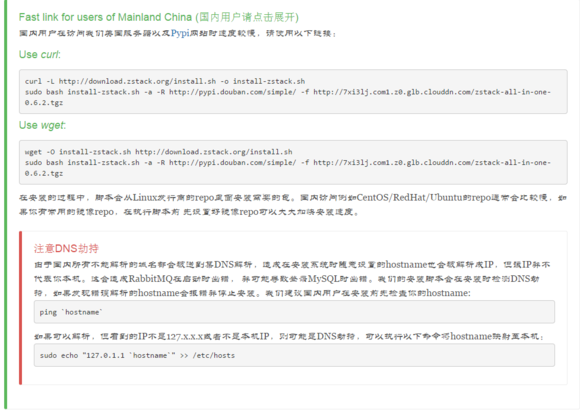
接下来开始我们一键安装部署之旅。
wget -O install-zstack.sh http://download.zstack.org/install.sh
sudo bash install-zstack.sh -a -R http://pypi.douban.com/simple/ -f http://7xi3lj.com1.z0.glb.clouddn.com/zstack-all-in-one-0.6.2.tgz
“人品”差点的话，可能会出现如下情景（还是拜我们“特殊”的网络环境所赐，(╯﹏╰)）
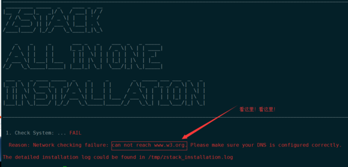
解决的办法：把www.w3.org 解析到本机“骗”过脚本检测就行。
echo "127.0.0.1 www.w3.org" >> /etc/hosts
再来一次继续我们的路程。（提示目录已存在，删除即可）
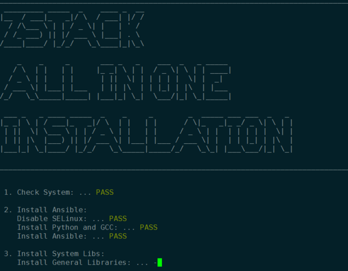
大约10-20分钟左右（网络质量良好），部署就完成，根据提示打开浏览器（通过验证）即可看到管理界面。
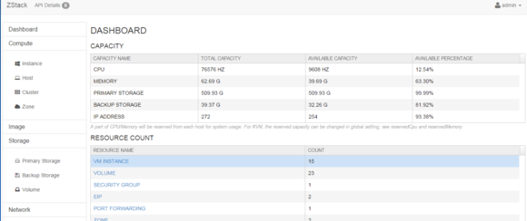
总体来说，ZStack整个部署过程还是很友好的，没有冗杂的配置（部分定制可以查看脚本的帮助，如IP指定等）。
架构篇
部署的简便性，只是ZStack的一个外在特性。ZStack真正核心价值还在于它的架构。（以下内容仅是本人个人观点，如有赞同，不胜荣幸。^_^)
全异步架构
传统的云管理平台在扩展方面有其特有的软肋--slow task。在并发不高的情况下，体现不是很明显，但批量的任务创建时（如创建虚拟机），就会出现任务失败或超时。想必许多OpenStack使用者都会有这样的经历，满心期待能够顺利创建虚拟机，却被一行行显眼的红色字体浇灭了热忱的心。其中的原因如下：
- OpenStack里任务（或者说消息）传递的路径很长，比如以创建VM为例 ，一个任务要经历 " service --> scheduler --> image service --> storage service --> network service --> hypervisor " 这条传递路径，每一环节都要一定的耗时，大批量任务执行时，延迟效应就更明显，最后就出现任务失败。
- 任务传递并非全异步。某些环节同步传递就会出现等待，进一步增加了任务时间。（关于同步与异步的区别，详见 http://avaj.iteye.com/blog/151724）。下图展示一个实例：
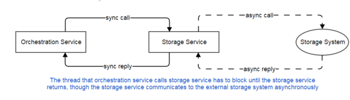
ZStack在这方面做了改进，把服务之间的消息调用（或者API请求），以及服务内部代码方法之间的调用全部实现异步架构 ，如下图所示：
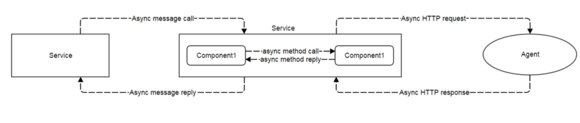
全异步架构带来了效率上的提升，本人没有系统地测试（与OpenStack对比），但仅从感官上讲，在ZStack上创建一台虚拟机，秒秒钟dash就显示创建成功了，那种享受，不言而喻。
无状态服务
在讲无状态服务之前，我先讲下有状态服务下的请求机制。 这里的状态是指在有多个管理节点时，每个管理节点都会有多个相同的微服务。那么微服务之间就要对自己管理资源的数量进行分配协商，向微服务发送请求的请求者也必须知道是哪个微服务在管理哪个资源。话多必失，还是上图看看（我大学老师说过，一图胜千言）：
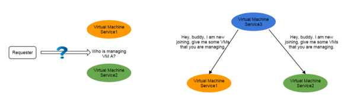
而在无状态服务下，这些事情交给hash ring处理，微服务之间无需知道自己或别人管了哪些资源。在请求里只需含一个唯一的UUID，不再需要指出把请求提交给哪个微服务，集群内部会把请求“路由”到指定的微服务 。如下图所示：
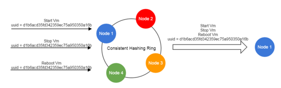
ZStack里，管理节点之间形成一个强一致的hash ring，每个节点都有一份包含所有节点信息（如节点UUID）的副本。当新节点加入或者节点退出时，都会产生广播消息通知到其他节点，整个集群会重新动态平衡，形成新的强一致的hash ring 。
ZStack自身强一致性的特性是其他IaaS软件（包括OpenStack）不可比拟的。OpenStack要实现服务的HA特性，必须借助第三方高可用方案，比如keepalived+Haproxy或者pacemaker方案。诚然这些都承受了生产环境的考验，但无疑给整个平台增加了复杂度。
微服务体系
云平台是个复杂的系统，管理着各种子系统（如计算、存储、网络、认证等）。每一次的请求任务都需要在各个子系统之间来回协调。比如说创建虚拟机，需要在计算、存储、网络、认证各环节都走通，任何一换出问题，都将导致创建失败。如下图为OpenStack各个子系统的调度关系图：
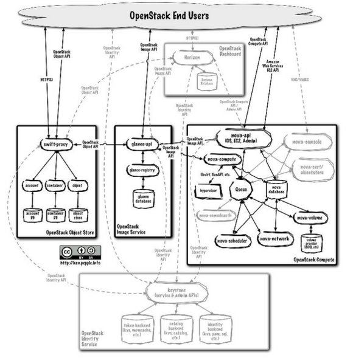
OpenStack服务之间不但有Http交互，也有RPC交互。整个系统错综复杂。另一方面，随着OpenStack的发展，修改代码有时候会变得不那么容易，甚至不得不重构整个子系统的代码，就像Neutron已经重构了。
反观ZStack，服务之间的交互就简单明了多了，所有交互统一走消息队列，整个拓扑结构不再紧密，实现星状的架构。如下图所示：
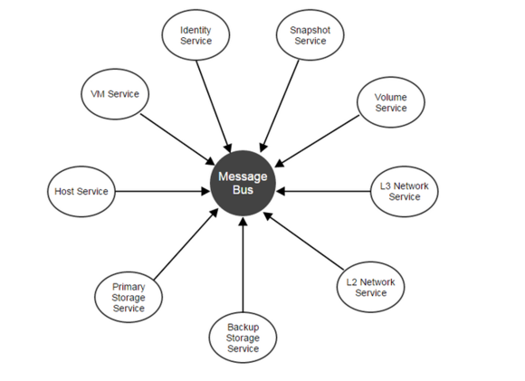
星状架构中，各服务之间只有消息的交互，服务之间基本完成独立，添加或者删除某个服务不会影响怎么个架构（只会失去某些功能）。
OpenStack与ZStack两者虽然都是微服务架构，但在实现上有本质的区别。
OpenStack的微服务是以独立进程分散到各个节点，这在一定程度实现了负载均衡的效果，但存在以下问题：
- 服务边界扩大
- 给部署、升级、维护带来困难
- 纷杂凌乱的配置
- 增加额外的监控负担
- 当扩展时，会生成更多的微服务
鉴于以上原因，ZStack采取 all in one process 的实现方式，这就带来下列特点：
- 更简洁的依赖关系；所有微服务都集中在一个进程中，相关代码都在一个包里，给部署、升级、维护、扩展带来了极大的便利。
- 集中式的配置管理；OpenStack每个服务都有自己的配置，而且还分散在不同的主机上，维护成本较大；ZStack就容易多了。
- 微服务只需要关注自己的业务逻辑，高可用、负载均衡、监控都可以交管理节点来完成。
- 进程级的应用扩展。从代码层讲，ZStack的微服务都是一个个独立的JAR包，且有自己独立的API，错误代码，全局配置，全局属性和系统标签。开发人员可以直接导入包，来实现自己的需要的功能。
综上所述，ZStack拥有一个清晰的、解耦的架构，这是实现健壮IaaS平台的基石。
插件机制
一个软件的扩展性是评价软件的重要指标之一。当前OpenStack主要支持两种插件扩展机制。
- strategy pattern （策略模式）
这是一种通用的扩展模式，通过API接口，实现功能扩展。比如OpenStack里Nova Hypervisor Driver 、Cinder Storage Driver等驱动都是通过这种形式实现的。这是一种通过已经定义好的协议来实现插制跟核心交互的。如下图所示：
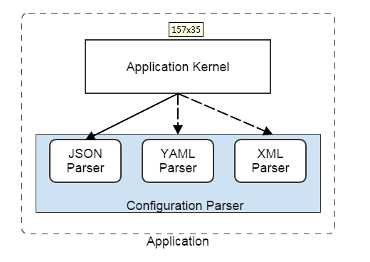
- The out-of-process service （进程外服务）
这种模式的典型就是外部服务（监控）通过消息监听，获取平台的消息。在OpenStack里，Ceilometer 服务里有很多监控的实现机制就是如此，示意图如下：
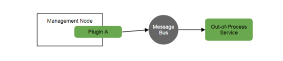
以上两种插件机制是OpenStack和ZStack所共有的，下面要提的机制是ZStack独有的。
- Observer pattern (观察者模式)
在这种模式下，插件会深入到监控应用内部的业务逻辑的事件。当应用内部发现事件时，插件会对此事件做出自己的响应，在插件自身的代码里执行相应的业务流。这种实现，对终端用户是完全透明的，是纯粹的内部实现。举个 Observer pattern 案例，在OpenStack里Security Group（安全组）功能是集成在Neutron里，不能单独剥离出来。而在ZStack里，Security Group是一种 Observer pattern plugin，你可以单独提取，而不影响整个网络功能的实现。这种插制的实现如下图所示：
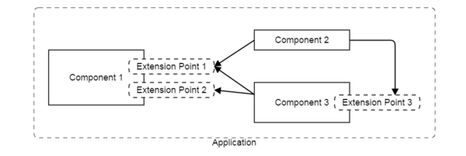
独特的插件机制，给ZStack带来了更灵活的实现。开发者可以根据自己业务需求扩展功能，而ZStack 开发者只需维护核心代码。如此带来的好处就是，整个云平台可以快速更迭，功能逐步完善，而整个架构还是健壮的。
以上这些架构特点并非ZStack的全部，比如说ZStack还有回滚机制，一但超时或出错，整个任务流就会回滚（包括数据库的修改，比如VM创建失败，IP会被回收，VM不会停留在errror状态而是直接被删除；而OpenStack会出现僵尸VM）。更多ZStack的架构方面的信息，详见ZStack官网。
网络篇
在云时代，用户对网络提出了更高的要求。云中的网络不再是固定不变的，而应该可以随时根据业务进行调整，对网络的隔离性也有更进一步的要求。另外，传统网络的功能（如LB、VPN、FW等）也被引入到了云中，更高级的SDN网络、NFV功能现在也开始集成了到了云中。OpenStack是网络集大成者，各种传统设备厂商、新型SDN公司以及各大运营商都在极力向Neutron靠拢，OpenStack的网络功能可谓包罗万象。
ZStack从一开始就把自己定位是私有云解决方案，它没有像OpenStack那么强大的网络功能，但基本已经能够满足私有云对网络的需求。ZStack 借鉴了CloudStack的网络解决方案，把网络功能都集成到Virtual Router来实现，实现计算、网络实现良好的隔离。比如说，端口转发和SNAT功能，OpenStack利用iptables在宿主机上来实现的，这导致宿主机的iptables更加纷杂（即有宿主机自身的规则，也有VM的规则）。而ZStack把这些实现（也是iptables）转移到了VR，排错相对比较容易。ZStack把CloudStack的基础网各和高级网络融合在了一起，可谓 “打破这种无理的分割”——来自某CS资深用户（@Star华星_FreeBSD）的肺腑感慨。ZStack在网络方面更让人倾心的是，它提供了丰富网络应用场景向导，基本上囊括了私有云常见的应用声场景。下面列举几个场景应用：
1. Amazon EC2 classic EIP
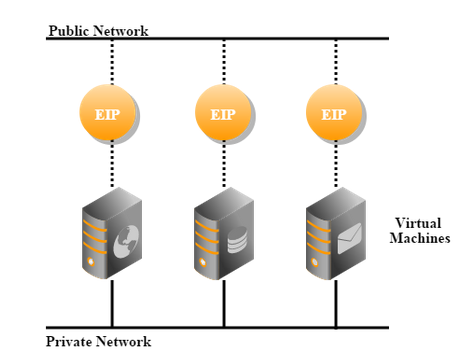
EIP（弹性IP）是当前云环境中最常见的应用。创建虚拟机的时候会分配一个private IP，当虚拟机绑定EIP的时候，虚拟机就可以实现公网路由了——这是在公有云场景。对应于私有云时，单纯private IP无法访问公网，只有绑定EIP，才能实现公网访问。EIP是动态的，用户可以实现更变绑定到不同的虚拟机上。这是云特性之一，弹性！（操作详见 http://zstack.org/tutorials/ec2-cli.html）
2.Flat network
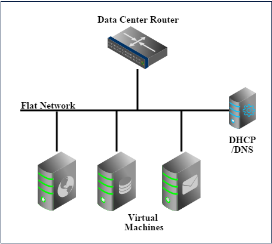
Flat network是一般企业内部很流行的应用场景。所有虚拟机共处一个广播域，虚拟机访问外网通过本地网关出去。如果L3子网在公网是可路由的，那虚拟机就可以直接分配公网IP。（操作详见 http://zstack.org/tutorials/flat-network-cli.html ）
更多场景详见 http://zstack.org/tutorials/ ，在此不再一一举例。
ZStack以上的各种网络场景是可以共存的，通过Zone设置，可以形成独立的网络环境，这大大增强了网络的灵活性。更多的功能，有待使用者挖掘。
疑惑篇
说了这么多ZStack优势，也得扒一扒ZStack相关薄弱或者说隐患的地方 。(个人鄙见，^_^)
- 融合的单进程架构，诚然存在很多优势，但也有隐患。本人看来，最大的隐患就是核心代码的处理逻辑，如果核心代码出现严重bug，直接导致进程挂掉，那整个集群就失控了（所有管理节点都是一致的）。ZStack是JAVA编写的，bug修复与部署都得重来，整个耗时就长了。OpenStack是Python脚本语言，直接线上修改即可，而且OpenStack是分散式微服务架构， bug只会影响具体某项功能，不会对整个集群产生毁灭性打击。
- ZStack当前的认证体系是融合在核心代码里的（至少我还没发现是否可以认证接口可以引入第三方认证），这对认证扩展带来了许多不便。比如说，不能集成现有的认证方式（比如AD、LDAP等），一般企业都有自己的认证体系。而OpenStack的Keystone在这方面做得不错，它可以无缝衔接第三方的认证（主要是AD、LDAP、Kerberos等）。统一的认证体系给企业在管理上带来不少的便利。
- 当前ZStack的版本（0.62）对存储支持有限，只支持NFS存储（最新的0.7 预览版支持iSCSI）。企业对存储的需求很大，从我目前观察来看，大部分企业还是挺看重本地存储。另外，当前的大数据时代，数据不再是线性增长，几乎可以说是指数增长曲线，所以企业对存储的扩展性要越来载高，ZStack应该支持更多的存储插件，比如GlusterFS、Ceph等分布式存储。
- ZStack的VR网络机制，满足中小型私有云那是没有问题，但是否能承受规模化私云的网络需求，有待考证。最好的方式就是引入SDN解决方案，彻底解决网络瓶颈。
- ZStack的L2网络当前还只支持VLAN，下一步可以考虑引下VXLAN、GRE等overlay的隔离，如此一来，网络功能就更加完善了。
外篇
在我看来，ZStack未来的商业模式就是提供私有云咨询服务，深耕私有云市场，与厂商进行接恰合作，提供专业的存储、网络服务。当然前提是做好ZStack的生态圈，让更多的企业和开发者来参与ZStack的发展。
此文是本人近期对ZStack的体验一些感受与想法，期间特别感谢ZStack的作者 张鑫、尤永康的帮助，也感谢ZStack社区 （QQ群：410185063 ）的各位朋友的帮助。特别是群管理员 @Star华星_FreeBSD (网名 群小助）的鼎力协助。希望ZStack越来越好，受到市场的关注。
作者简介：沈志伟，某游戏公司云计算负责人，OpenStack用户。QQ：1360848475，weibo: 一页空纸，微信: jayway8023
第七届中国云计算大会将于6月3日-5日在北京国家会议中心举办。目前主会演讲嘉宾名单和议题方向已经公布，众多中国科学院/中国工程院院士、BAT云技术领军人、三大运营商云计算负责人、中国银联执行副总裁、青云联合创始人等嘉宾届时都将带来精彩演讲。欢迎大家访问【 大会官网】，了解更多详情。
本文为CSDN原创文章，未经允许不得转载，如需转载请联系market#csdn.net(#换成@)
- 顶
- 0
- 踩
- 0
- CSDN官方微信
- 扫描二维码,向CSDN吐槽
- 微信号：CSDNnews

微博关注